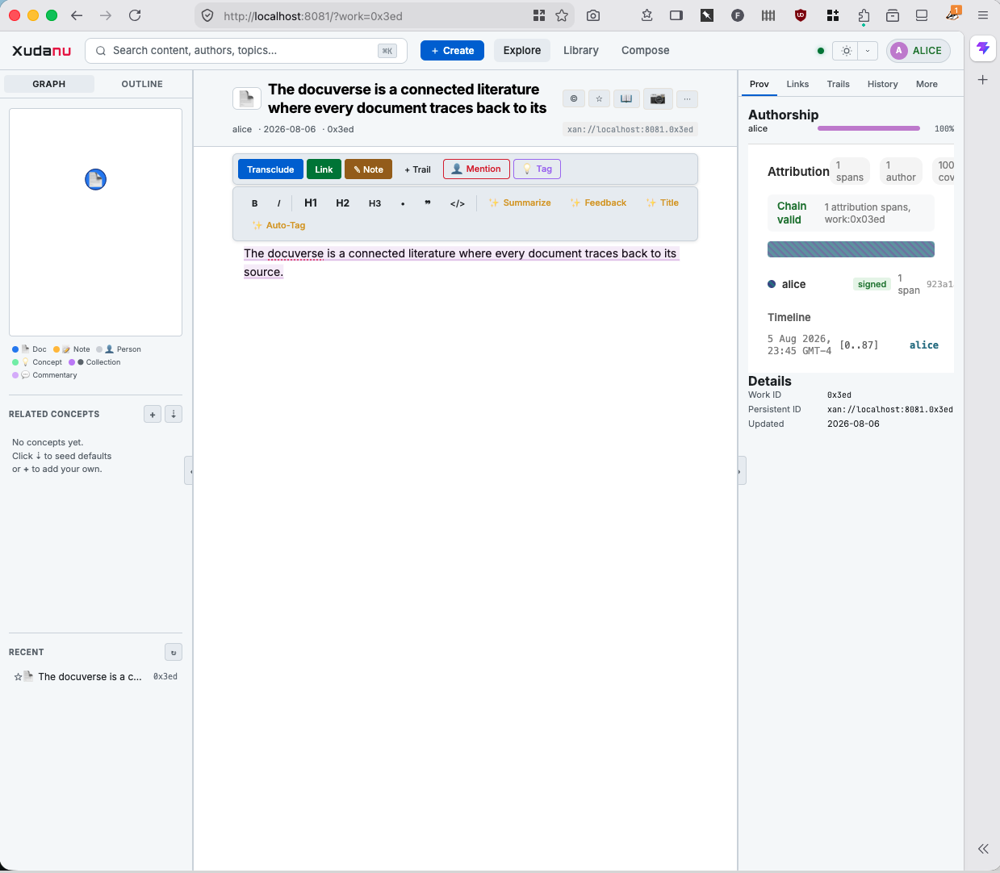
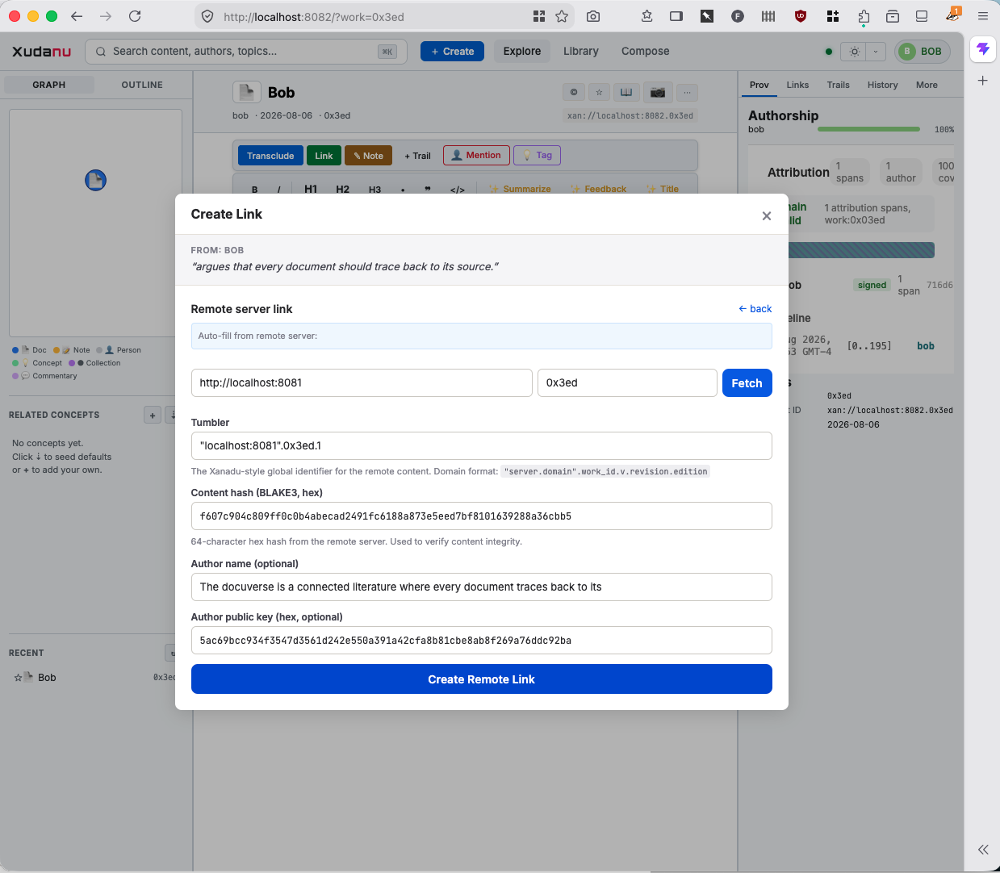

Sets the work's read_club to public. Content becomes available at /api/public/work/{id} with full text, BLAKE3 hash, and server Ed25519 signature.
Enters Alice's server address and work ID. Xudanu fetches the well-known identity (/.well-known/xudanu-server.json), then fetches the content with hash verification.
Bob's server recomputes blake3(text) and compares with the expected hash. Mismatch = tamper detected, content rejected. Match = content cached in blob store.
Alice's server signed hash + namespace_id + revision with its private key. Bob verifies with Alice's public key from the well-known endpoint. No MITM possible.
Bob's document shows the transcluded passage inline with attribution to Alice's server. Backlink notification sent to Alice. If Alice goes offline, Bob serves from cache.
Every byte of transcluded content is hash-verified against the source. Tampering is detected instantly. Content cannot be silently substituted.
Each server cryptographically signs its content. You know which server vouched for the text. Forgery requires the server's private key.
Domain-based tumblers ("alice.example.com".5.3.10.7) provide stable, server-independent addresses. Servers can move; tumblers stay the same.
Every transclusion carries its full chain: who wrote it, when, on which server. Recursive again() walk traces content through multiple transclusion hops.

